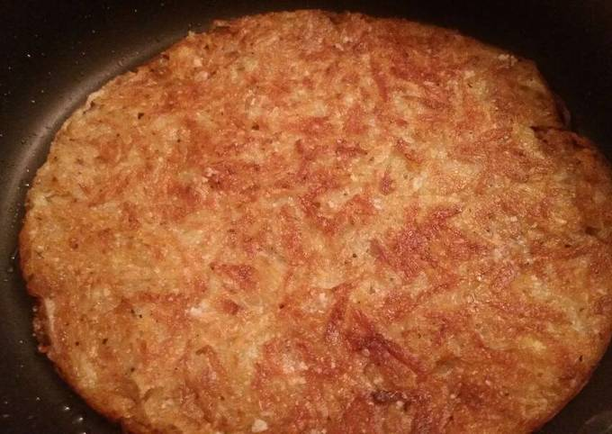

Hashbrowns

Description
This simple recipe is a cast-iron favorite! Prepare for salty, crunchy goodness.
Ingredients
- Hashbrowns
- Olive oil
- Salt
Steps
- Set stovetop to med high to quickly heat up the cast iron pan.
- Pour in a generous helping of oil.
- Place in around half a bag of frozen hashbrowns. If you do this soon enough, the oil would still be lukewarm.
- Salt the hashbrowns, then cover with a lid for 10 minutes.
- Remove the lid, flip the hashbrowns. Salt the hashbrowns.
- Consider pressing into the hashbrowns with a spatula to squish them together and increase scrumptiousness.
- Continue flipping as needed. If some bits of the hashbrown are done before the others, you can take them out first and contiue cooking the rest.